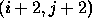
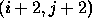

where,
The first term in (3) is the grey level matching at selected pixel locations, namely, at those locations where there is no vertical line field, or horizontal line field, or both vertical and horizontal line fields are not present. The reason for such a selection process is that, at edge points (i.e. points where or ) we cannot expect the grey levels to be similar in the left image and the right image. On the other hand , where ever there is no edge we can expect similar grey levels in the left image and the right image.
Next, since it is not very meaningful to compare one pixel in the
left image with one pixel in the right image, we average the grey values around
the pixel displaced by  in the neighborhood in the
right image. Here
represents the number pixels over which the average is
obtained.
The second term is the smoothing term with the expression in the curly bracket
as the controlling parameter. The disparity
in the neighborhood in the
right image. Here
represents the number pixels over which the average is
obtained.
The second term is the smoothing term with the expression in the curly bracket
as the controlling parameter. The disparity  , (p,q)
, (p,q)  (
( is a window around the pixel
is a window around the pixel  ) does not vary much provided
there are no edges in the interpolated scene within the window
) does not vary much provided
there are no edges in the interpolated scene within the window  . The
term in the square bracket precisely does this by switching off smoothing
within the window
. The
term in the square bracket precisely does this by switching off smoothing
within the window  whenever a line field is encountered in
the interpolated image in the window .
This term is better explained by looking at
Figure 3
whenever a line field is encountered in
the interpolated image in the window .
This term is better explained by looking at
Figure 3
Consider a window around the pixel  in Figure 3.
Let the lines marked between the pixels represent the edge in the interpolated
scene or the disparity map. Clearly the disparity value at
in Figure 3.
Let the lines marked between the pixels represent the edge in the interpolated
scene or the disparity map. Clearly the disparity value at  and  or and
and  or and  cannot be similar, because of the presence of an
edge. In the
same way the disparity value at and or
cannot be similar, because of the presence of an
edge. In the
same way the disparity value at and or  and
and  cannot
be similar. Hence the disparity values should not be smoothed, and this is
precisely being done by the term in the square bracket. The term in the square
bracket
returns a non-zero value only when there is no edge in the window under
consideration.
cannot
be similar. Hence the disparity values should not be smoothed, and this is
precisely being done by the term in the square bracket. The term in the square
bracket
returns a non-zero value only when there is no edge in the window under
consideration.
Next we consider the incorporation of the two constraints, smoothness and uniqueness first proposed by Marr [26]. In our case, Marr's smoothness constraint gets modified as: Disparity varies smoothly between edges. The term in the curly bracket takes care of this; we refer to this as the selective smoothing term. The third term takes care of the uniqueness constraint. The idea being that each point in the left image should have one and only one corresponding point in the right image. More explicitly, it means that along any row i if we were to calculate the disparity at the and the column (call it ) then according to the uniqueness constraint ; for the whole image this translates into the third term of (3). To our knowledge this energy function for the matching block is new.